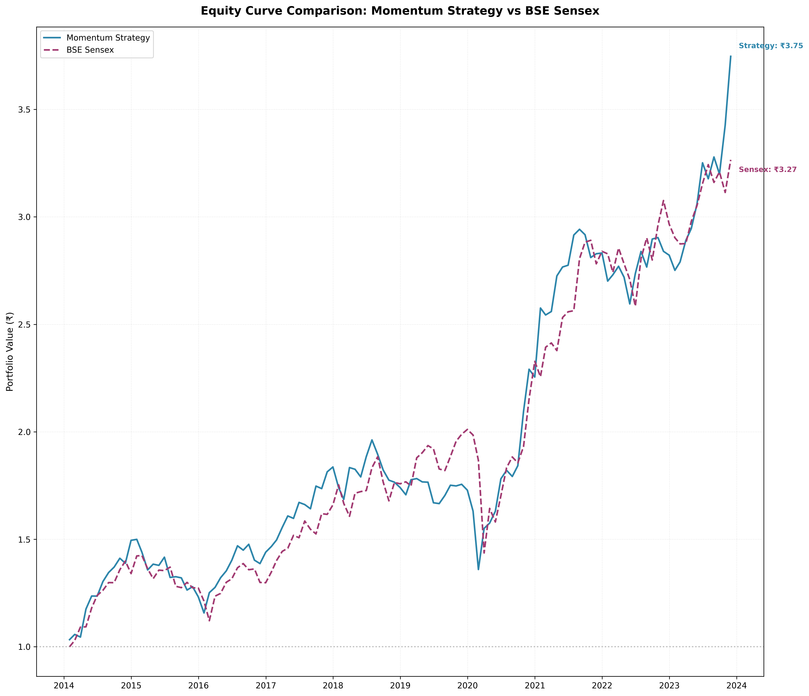

Quantitative Momentum Strategy - Walk-Forward Backtest
A systematic equity momentum strategy implemented and evaluated using strict time-series discipline, walk-forward validation, and realistic trading assumptions.
Project Overview
This project explores whether simple momentum-based signals can consistently outperform a broad market index when evaluated using realistic backtesting techniques. The strategy dynamically selects top-performing stocks based on recent momentum and periodically adapts signal weights using rolling historical data.
Dataset
- Historical daily price data for Indian equities
- 12 years of data used (11 years required for rolling evaluation)
- Backtest period: 2014 – 2024 (10 years)
- Universe filtered to stocks with continuous historical availability
Strategy Logic
At a high level, the strategy ranks stocks based on a weighted combination of short-term and medium-term momentum signals:
- 1-Month Momentum (1M)
- 3-Month Momentum (3M)
Stocks are ranked monthly using the weighted signal, and the top 50% of the universe is selected for the portfolio. The portfolio is rebalanced monthly.
Signal Adaptation
Signal weights are not fixed. Every six months, the strategy re-evaluates the optimal weighting between 1M and 3M momentum using a rolling 24-month window:
- First 18 months --> signal evaluation
- Last 6 months --> out-of-sample validation
- Best-performing weights applied to the next 6 months of live trading
Risk Controls & Assumptions
- Monthly rebalancing
- Transaction cost modeled at 0.1% per trade
- No look-ahead bias or future leakage
- All decisions use information available at the time
Performance Results
CAGR: 14.25%
Index CAGR: 12.67%
Total Return: 274.7%
Sharpe Ratio: 0.91
Index Sharpe: 0.83
While the excess return over the index is modest, the strategy demonstrates a significantly improved risk-adjusted return, highlighting the value of systematic signal selection and disciplined validation.
Evaluation Artifacts
Equity curve comparison (strategy vs index):
Key Takeaways
- Simple momentum signals can remain effective when evaluated correctly
- Risk-adjusted performance matters more than raw returns
- Walk-forward validation is critical in financial ML
- Adaptive strategies outperform static parameter choices